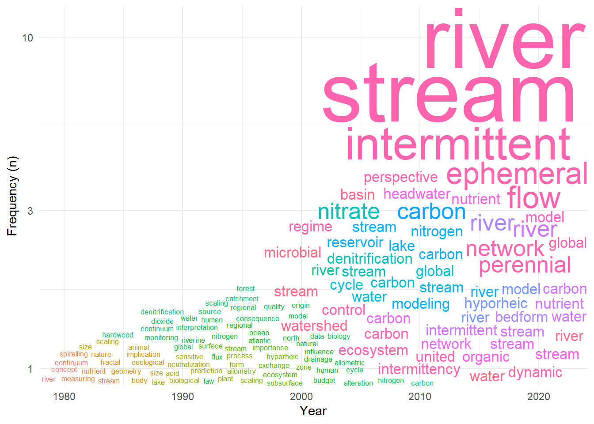
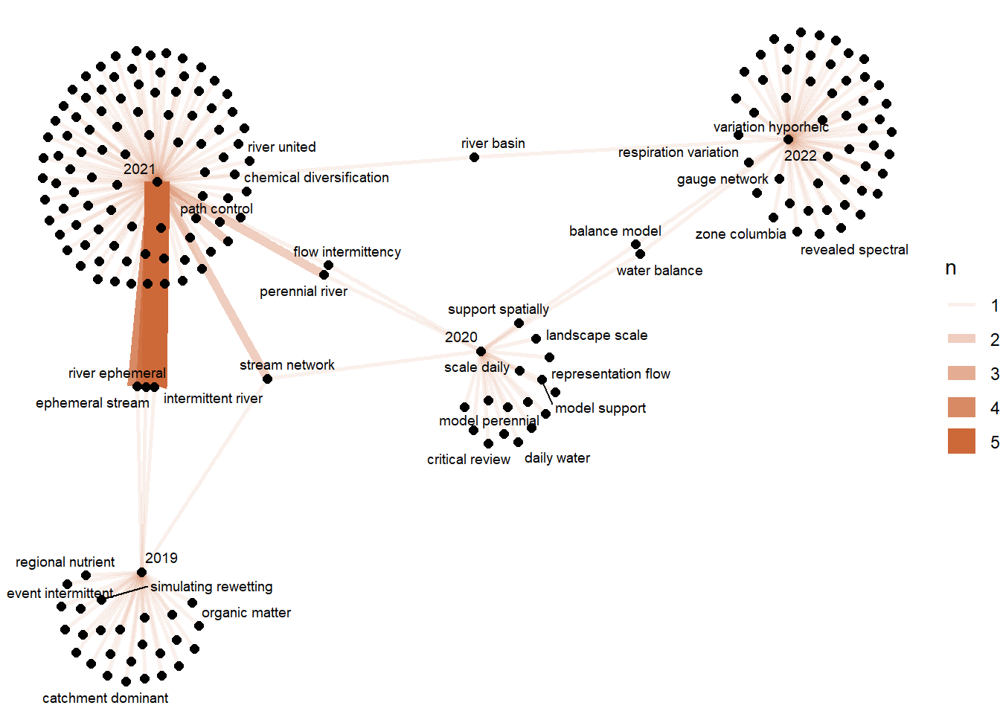

# install.packages("librarian")Literature Review
High-Level Literature Review with AI (Research Rabbit) and Text Analysis
Working on Research Rabbit
What is Research Rabbit?
Research Rabbit was created by a small team (three engineers) that decided to provide researchers with a tool to organize visually (yeah!), literature searches using A.I. There are many other online tools with similar (or even more advanced) features. Yet, the distinguishing element of Research Rabbit is that it is free to everyone.
How to use Research Rabbit?
You can use Research Rabbit entirely online or as a desktop app. This is a short tutorial that will take you through the basics. If you want to install the desktop app, you can follow these steps:
- [Download the web catalog app](https://webcatalog.io/en/) and install it on your system (either Mac or PC)
- Launch the app, look for Research Rabbit, and click on Install
- Once installed, open the app.
- Sign up to have a user account. I recommend using the same email address you have for Zotero and GitHub.
- You can import Zotero collections directly into research rabbit, but we will start a new collection for this quick tutorial.
- Name the new collection (be as specific as possible, so you can quickly recognize it on a quick search). Hit enter, and you can start adding papers to it.
- You can add papers directly from the web using “All Subject Areas.”
- Start building your collection and select papers based on earlier/later work. For building an initial background, I suggest using earlier work.
- Once you build your collection, select all papers and export the file as a BibTeX or CSV
Your turn!
Launch Research Rabbit and start a collection with the topic of your preference. Your collection should start with a few paper-seeds (2-4). From there, you will literally go down the rabbit’s hole, but visually adding papers to your collection as you find them in strategic locations in the growing network of connected papers. Once you are done, download your collection as an csv file and put it into a new folder in your desktop. Name this folder wherever you want, but keep in mind that we will use it as a working directory for the next part.
Beyond citation networks
Let’s start our analysis by creating an Rproject. Open R studio, and create a new project. To do so: 1. Place your cursor at the top right corner, 2. Click on the drop down tiny arrow and select New Project 3. Choose “On an Existing Working Directory” and browse to the location of the folder where you stored your csv file.
Now that we are in our working directory, you should be able to see the csv file on the “Files” tab on the bottom right panel.
O.k. let’s run some code chunks.
If you have never used librarian, run this first line of code:
What librarian does is to call for packages within our library and if it cannot find them, it install these packages in your library and call them into your current environment.
require(librarian)Loading required package: librarianWarning: package 'librarian' was built under R version 4.2.3librarian::shelf(plyr, tidytext, tidyverse,
widyr,igraph, ggraph,
wordcloud, reshape2, graphlayouts,
pluralize, quanteda, qgraph, cowplot, readr,
ggwordcloud,tm, plotly)
The 'cran_repo' argument in shelf() was not set, so it will use
cran_repo = 'https://cran.r-project.org' by default.
To avoid this message, set the 'cran_repo' argument to a CRAN
mirror URL (see https://cran.r-project.org/mirrors.html) or set
'quiet = TRUE'.Warning in .recacheSubclasses(def@className, def, env): undefined subclass
"unpackedMatrix" of class "mMatrix"; definition not updatedWarning in .recacheSubclasses(def@className, def, env): undefined subclass
"unpackedMatrix" of class "replValueSp"; definition not updatedWarning: package 'plotly' was built under R version 4.2.3Our data.
# t_df <- read_csv("your_lit_review_file.csv", show_col_types=FALSE)
assets_pubs <- "../1-swf-knowledge.base/assets/data/raw"
t_df <- as_tibble(read_csv(paste(assets_pubs,"230321_research_rabbit_scaling_pubs.csv",sep='/'),show_col_types = FALSE))
t_df# A tibble: 104 × 8
DOI PMID arXiv…¹ Title Abstr…² Authors Journal Year
<chr> <dbl> <lgl> <chr> <chr> <chr> <chr> <dbl>
1 10.1002/eco.2390 NA NA Drou… Interm… Romain… Ecohyd… 2021
2 10.1007/s10661-013-3247-7 2.38e7 NA Biog… The Bo… Norber… Enviro… 2013
3 10.1002/hyp.14514 NA NA Grou… Stream… Jacob … Hydrol… 2022
4 10.1007/s10533-018-0426-1 NA NA Hydr… Headwa… Erin C… Biogeo… 2018
5 10.5194/hess-2020-10 NA NA Eval… Abstra… Songya… Hydrol… 2020
6 10.1111/j.1365-2427.2009… NA NA Emer… SUMMAR… Scott … Freshw… 2010
7 10.1029/2021jg006654 NA NA Spat… While … Kyongh… Journa… 2022
8 10.1038/s41467-022-28630… 3.53e7 NA Supe… River … Wilfre… Nature… 2022
9 10.1126/science.284.5420… 1.04e7 NA The … Fracta… Geoffr… Science 1999
10 10.1029/2022wr034062 NA NA A Ne… <NA> Pier L… Water … 2023
# … with 94 more rows, and abbreviated variable names ¹`arXiv ID`, ²AbstractFor our analyses below, we won’t need DOIs, PMIDs or arXiv IDs. We will focus on Title, Abstract, Authors, Journal, Year. To keep column names formatting simple, I use lowercase and spaces are added with (_) when needed.
Since research rabbit pulls information from multiple databases, in some cases is possible that the abstracts for the papers are not retrieved. In such cases, the value returned would be NA (which is read as a character string and not as the typical NA). It could also happen that the abstracts could be partially retrieved. To filter these cases out, we will add another column to the data frame to count the character length of each abstract, and remove those that are less than 20 characters long. Finally, we will add a sequential id and make it a factor for visualization purposes.
t_df_c <- t_df %>%
select(Title,Abstract,Authors,Journal,Year) %>%
rename(title = Title,
abstract = Abstract,
authors = Authors,
journal = Journal,
year = Year) %>%
mutate(abstract_lenght = nchar(abstract)) %>%
filter(abstract_lenght > 20)
t_df_c <- t_df_c%>%
mutate(id = seq(from =1, to= nrow(t_df_c),by=1)) %>%
mutate(id = factor(id))
t_df_c# A tibble: 96 × 7
title abstr…¹ authors journal year abstr…² id
<chr> <chr> <chr> <chr> <dbl> <int> <fct>
1 Drought in intermittent river an… Interm… Romain… Ecohyd… 2021 1558 1
2 Biogeochemical patterns in a riv… The Bo… Norber… Enviro… 2013 1768 2
3 Groundwater‐stream connectivity … Stream… Jacob … Hydrol… 2022 1685 3
4 Hydrologic and biogeochemical dr… Headwa… Erin C… Biogeo… 2018 1278 4
5 Evaluating a landscape-scale dai… Abstra… Songya… Hydrol… 2020 2091 5
6 Emerging concepts in temporary‐r… SUMMAR… Scott … Freshw… 2010 2515 6
7 Spatial microbial respiration va… While … Kyongh… Journa… 2022 1745 7
8 Superlinear scaling of riverine … River … Wilfre… Nature… 2022 1341 8
9 The Fourth Dimension of Life: Fr… Fracta… Geoffr… Science 1999 657 9
10 Toward a metabolic theory of eco… Metabo… James … Ecology 2004 1351 10
# … with 86 more rows, and abbreviated variable names ¹abstract,
# ²abstract_lenghtData cleansing
To make sure all words are processed correctly, we need to do some additional cleaning on the text data. That includes un-nesting each publication component (pub_comp) into tokens (i.e. single words), performing the cleaning tasks (i.e. singularizing,removing punctuation and digits, removing stop words (a, an, by, …)), and finally putting the tokens back together (i.e. nesting)
How to unnest and nest text data in using tidytext? check this post: https://stackoverflow.com/questions/49118539/opposite-of-unnest-tokens-in-r
Choosing analysis level
You can choose the publication component (pub_comp) you want to focus your analysis on. In this case, our options are title or abstract
pub_comp = "title"
# Preparing the data
pub_comp_c <- select(t_df_c,all_of(!!paste(pub_comp))) %>%
rename(pub_comp_words = pub_comp) %>%
unnest_tokens(output = word, input = pub_comp_words, drop = FALSE) %>%
rowwise() %>% mutate(word = tolower(word)) %>%
rowwise() %>% mutate(word = if_else(word == "data","data",singularize(word))) %>%
filter(!str_detect(word, "[:punct:]|[:digit:]")) %>%
filter(!word %in% c(stop_words$word)) %>%
nest(word) %>%
mutate(!!paste0(pub_comp) := map_chr(map(data, unlist), paste, collapse = " "))Warning: All elements of `...` must be named.
Did you want `data = word`?Note: Using an external vector in selections is ambiguous.
ℹ Use `all_of(pub_comp)` instead of `pub_comp` to silence this message.
ℹ See <https://tidyselect.r-lib.org/reference/faq-external-vector.html>.
This message is displayed once per session.# Combining our original data frames for text analysis
t_df_c_m <- t_df_c %>%
select(year,authors,journal)
pub_comp_m <- select(pub_comp_c,!!paste0(pub_comp))
pub_dat <- as_tibble(cbind(pub_comp_m,t_df_c_m))
pub_dat# A tibble: 96 × 4
title year authors journal
<chr> <dbl> <chr> <chr>
1 drought intermittent river ephemeral stream network 2021 Romain… Ecohyd…
2 biogeochemical pattern river network land gradient 2013 Norber… Enviro…
3 groundwater stream connectivity minute month united ba… 2022 Jacob … Hydrol…
4 hydrologic biogeochemical driver dissolved organic car… 2018 Erin C… Biogeo…
5 evaluating landscape scale daily water balance model s… 2020 Songya… Hydrol…
6 emerging concept temporary river ecology 2010 Scott … Freshw…
7 spatial microbial respiration variation hyporheic zone… 2022 Kyongh… Journa…
8 superlinear scaling riverine biogeochemical function w… 2022 Wilfre… Nature…
9 fourth dimension life fractal geometry allometric scal… 1999 Geoffr… Science
10 metabolic theory ecology 2004 James … Ecology
# … with 86 more rowsTokenization
Our first step to analyze the selected publication component, is to break it into individual words (or tokens) and store the tokens in a new data frame for (pub_tokens). There are several packages you could use to tokenize a piece of text, here we will use the tidytext package for most of our analysis.
What the following chunk of code does is: 1) call the pub_dat dataset, 2) break the chunk of (nested) text into tokens (output = word) by using the function un-nest_tokens(), 3) eliminating duplicated words with distinct(), 4) grouping the tokens (word) by years, 5) calculating the frequency of a given token in each year -count(), and adding a new column with the number of characters -nchar for each token, so we can filter monosyllables.
pub_tokens <- pub_dat %>%
unnest_tokens(output = word, input = pub_comp, drop = FALSE)%>%
distinct() %>%
group_by(year) %>%
count(word, sort = TRUE) %>%
mutate(length = nchar(word)) %>%
filter(length>2) Time-indexed wordclouds
Low values for res_plot, correspond to lower number of words used and viceversa.
res_plot <- 0.2
depth <- res_plot*nrow(pub_tokens)
p <- ggplot(pub_tokens[c(1:depth),],
aes(x = year,
y = n,
label = word,
size = n,
color = as.factor (year))) +
geom_text_wordcloud(area_corr_power = 1) +
scale_radius(range = c(0, 25),
limits = c(0, NA)) +
scale_y_log10()+
xlab("Year")+
ylab("Frequency (n)")+
theme_minimal()
p
Conceptual maps from n-grams
Creating a dataframe for n-grams
gram_l = 2
breath = 200
time_window = 2018
n_gram <- paste(gram_l,"gram",sep='-')
a <- seq(1:gram_l)
b <- rep("word",times=gram_l)
columns <- paste(b,a,sep = '')
pub_ngrams <- pub_dat %>%
ungroup() %>%
unnest_tokens(n_gram, pub_comp, token = "ngrams", n = gram_l) %>%
# separate(n_gram, columns, sep = " ", remove = FALSE) %>%
group_by(year) %>%
# count(across(all_of(columns), ~.x), sort = TRUE) %>%
count(n_gram, sort = TRUE) %>%
mutate(rank = row_number(),
total = sum(n),
t_freq = n/total)
head(pub_ngrams)# A tibble: 6 × 6
# Groups: year [3]
year n_gram n rank total t_freq
<dbl> <chr> <int> <int> <int> <dbl>
1 2021 intermittent river 5 1 111 0.0450
2 2021 ephemeral stream 4 2 111 0.0360
3 2021 river ephemeral 4 3 111 0.0360
4 2007 carbon cycle 2 1 20 0.1
5 2007 global carbon 2 2 20 0.1
6 2009 lake reservoir 2 1 49 0.0408Plotting our map
ngram_graph <- pub_ngrams %>%
filter(rank < breath) %>%
filter(year > time_window) %>%
graph_from_data_frame()
ngram_graphIGRAPH 89174a9 DN-- 197 203 --
+ attr: name (v/c), n (e/n), rank (e/n), total (e/n), t_freq (e/n)
+ edges from 89174a9 (vertex names):
[1] 2021->intermittent river 2021->ephemeral stream
[3] 2021->river ephemeral 2021->perennial river
[5] 2021->river stream 2021->stream network
[7] 2019->analysis leached 2019->carbon chemostasi
[9] 2019->catchment dominant 2019->chemostasi headwater
[11] 2019->dissolved organic 2019->dominant influence
[13] 2019->dynamic stream 2019->emergent dissolved
[15] 2019->ephemeral stream 2019->event intermittent
+ ... omitted several edgesp2 <- ggraph(ngram_graph,
layout = "fr")+
geom_edge_link(aes(edge_alpha = n, edge_width = n), edge_colour = "sienna3") +
geom_node_point(size = 2) +
geom_node_text(aes(label = name), repel = TRUE,
point.padding = unit(0.2, "lines"), size = 2.5) +
theme_void()
p2Warning: ggrepel: 163 unlabeled data points (too many overlaps). Consider
increasing max.overlaps